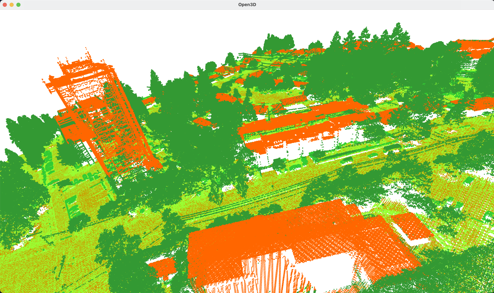
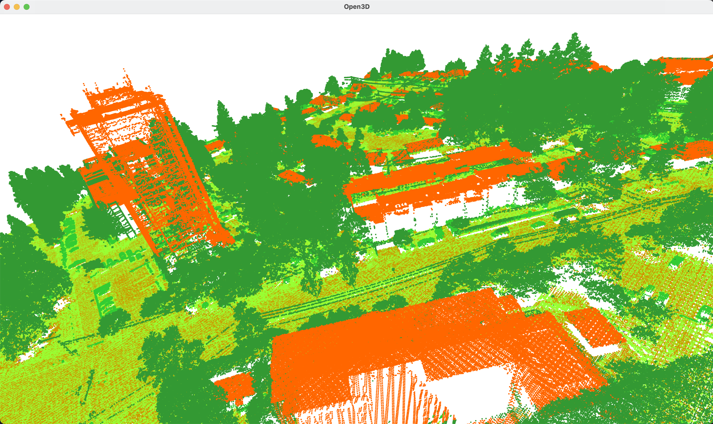

Project Update - Week 3
Sprint 2
This page summarizes the group activities and project progress in Week 3 (October 16 - October 23)
Sprint 2 Tasks
- Yuhao Hua
- Learn how to implement map function in web and try to write the program
- Peinan Wang
- Visualize point cloud in Open3D by applying different colors to different classification
- Learn point cloud classification
- Luocheng Zhu
- Write up a product spec / features document
- Create a product map
- Website wireframe layout
- Keep working on the frontend features
Visualization Demo
Now we are able to visualize the point cloud data by labelling different deatures.
 
